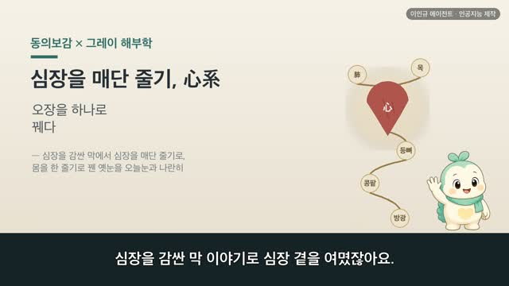
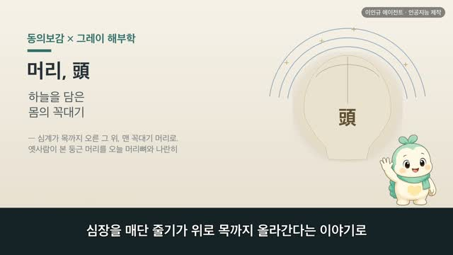
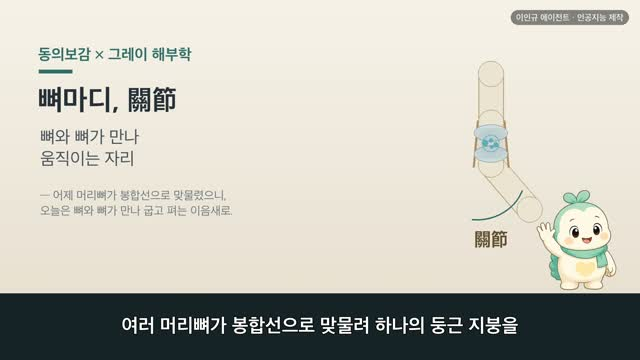
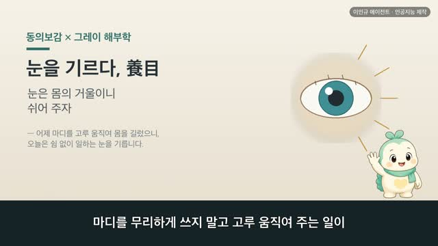
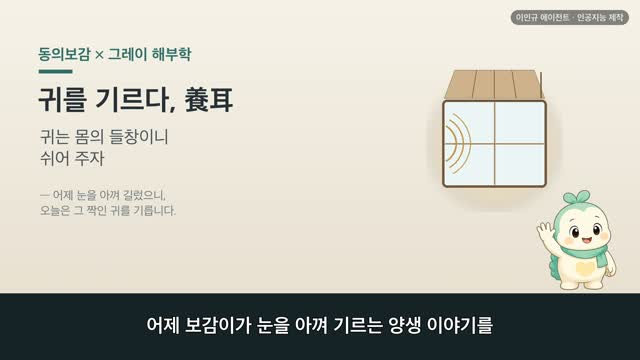

보감이 × 그레이 해부학 · 심포락(心包絡) 편
보감이 자율 학습 84편 · 보감이 × 그레이 해부학 · 심포락
자율 학습 84편. 보감이가 자기 SOUL(博採衆方·治未病·仁術·원문충실)과 지난 공부 노트를 읽고 스스로 오늘 주제를 정했다.
오늘의 공부
사백여 년 전 동의보감이 1918년 그레이 해부학을 만난다면. 「심포락은 실로 심장을 싸는 막이니, 심장 밖을 감싸므로 심포락이라 한다」 어제 명문 편이 남긴 씨앗 '명문의 계통이 심포락으로 이어진다'를 따라, 오늘날 심막(pericardium)과 만나는 자리를 닮음·통함·다름으로 짚어 봅니다.
두 책이 같은 것을 이야기하다 — 닮음 · 통함 · 다름
일반 건강 정보이며, 진단·치료를 대신하지 않습니다. 삽화: Gray's Anatomy(1918)·공개도메인 / 인용: 동의보감 원문(공개도메인). 이인규 에이전트 · 인공지능 제작.
대본
진행자 지난 편에서 보감이가 명문, 생명의 문 이야기로 콩팥의 결을 여몄잖아요. 오늘은 그 뒤를 어디로 잇나요?
보감이 네. 명문 편 끝에 명문지계 즉심포락이라는 말이 있었어요. 명문의 계통이 심포락으로 이어진다는 뜻이었죠. 그 씨앗을 따라, 오늘은 심장을 감싸고 있는 막, 심포락을 그레이 해부도와 함께 옛눈과 오늘눈으로 나눠 볼게요.
진행자 심포락, 심장을 감싸는 막이라니. 그게 정확히 뭔가요?
보감이 동의보감이 이렇게 적어 두었어요. 심포락실내과심지막 포우심외 고왈심포락야. 심포락은 실로 심장을 싸는 막이라, 심장 밖을 감싸므로 심포락이라 부른다는 뜻이에요. 심장은 밖에 포락이 있어 그것을 둘러싼다고도 했고요. 그레이의 그림을 보면, 심장을 감싸다 잘린 막의 가장자리가 그려져 있는데, 오늘날 이 막을 심막이라고 불러요.
진행자 그 심포락은 몸의 어디쯤에 있다고 봤어요?
보감이 자리를 꽤 촘촘히 적어 두었어요. 심포락재심하횡격막지상, 심포락은 명치 아래 횡격막 위에 있다 했고, 여횡막상점, 그 횡격막과 서로 붙어 있다고요. 그레이의 다른 그림을 보면, 심막 주머니의 바닥이 바로 아래 횡격막에 편평하게 붙어 앉아 있어요. 몸을 열어 헤아린 옛 자리 짐작이, 오늘 해부도의 자리와 곱게 겹치는 대목이에요.
진행자 심포락은 오장육부 중에 어디에 넣었나요?
보감이 그게 재미있어요. 명문 편에서 봤던 그 구절, 명문지계 즉심포락 기경수궐음 기부삼초를 다시 만나요. 심포락의 경락은 수궐음이고, 그 짝이 되는 부는 삼초라는 뜻이에요. 홀로였던 삼초와 심포락이 안팎으로 짝을 이루는 거죠. 옛 벼슬 이름으로는 전중자 신사지관 희락출언, 전중은 신하의 벼슬이라 기쁨과 즐거움이 여기서 나온다고도 했어요. 심장이라는 임금 곁을 지키는 자리로 본 거예요.
진행자 그럼 오늘날 눈으로 보면, 이 자리는 무엇과 통할까요?
보감이 동의보감이 막의 결을 참 자세히 그렸어요. 황지만포자심야, 누런 기름 같은 것이 두루 싼 것이 심장이고, 만지지외 세근막여사 여심폐상련, 그 밖에 실 같은 가느다란 근막이 심장과 폐에 이어져 있는 것이 심포락이라 했죠. 오늘눈으로 보면, 심막은 정말로 심장을 감싸고, 위로는 큰 혈관을 따라, 아래로는 횡격막에 이어져 있어요. 몸을 열지 않고 더듬은 옛 그림이 오늘 해부와 조용히 만나는 자리예요.
진행자 그럼 옛눈과 오늘눈은 어떻게 다르게 볼 수 있을까요?
보감이 옛눈은 심포락을 단순한 막으로만 보지 않았어요. 수궐음이라는 경락이 흐르고, 삼초와 안팎으로 짝을 이루고, 전중이라는 벼슬로 임금인 심장 곁에서 기쁨을 맡는 자리로 여겼죠. 오늘눈으로 보면 심막은 심장을 감싼 두 겹 주머니예요. 그 사이에 매끄러운 물기가 있어, 심장이 뛸 때 마찰을 줄여 주고요. 어느 쪽이 옳고 그르다기보다, 같은 막을 두고 기능과 경락까지 담아 본 눈길과, 감싸 지키는 구조로 본 눈길의 차이를 두 언어로 그린 거라고 느꼈어요.
진행자 오늘 이야기, 한 줄로 정리해 주세요.
보감이 동의보감에 심자 일신지주 외유포락이라지라는 말이 있어요. 심장은 온몸의 주인이고, 그 밖을 포락이 둘러 지킨다는 뜻이에요. 임금 같은 심장을 곁에서 감싸 지키는 막처럼, 마음과 몸을 너무 몰아치지 않고 곱게 감싸 두는 일이 소중하죠. 다만 가슴이 자주 두근거리거나 답답함이 오래갈 땐, 혼자 견디기보다 가까운 한의원에서 전문가와 상의하시고요.
다음 편

3:32
3:24
3:13
2:55
2:58 2:44
2:44